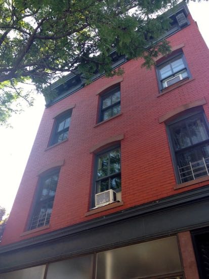

Henry Miller's House

After almost six months in New York City I made it to see 662 Driggs Ave., Brooklyn, the house where Henry Miller spent the first nine years of his life. It was sunny and hot last Sunday and I was one of many flocking to Williamsburg. Even though I’ve been there and seen the house, I have a difficult time reconciling Miller’s 14th Ward, Brooklyn, with what I know of Williamsburg, which doesn’t amount to much: through housing searches I’ve learned that Williamsburg is trendy and priced exorbitantly. What I know of Miller’s 14th Ward inspires my imagination much more compared to the current Williamsburg that partakes in a sterile sameness that represents the hip of this city.
I went to the house after reading Miller’s essay “Remember to Remember,” where he writes about his reasons for wanting to write about the great time he had in France. He grapples with his nostalgia for Europe and his dislike for the American way.
Often I have thought of the vulgar glare which illumines the American scene is the effect of our refusal to accept anything but a day-time world. Our countenances are fixed with the stare of the hypnotic obeying the dictates of an invisible presence.
In the 125 years since Miller lived in the house on 662 Driggs Ave., the area has changed considerably. Even in the 30 years that the current owners have lived in the house, the area has changed and shifted. It is impossible to imagine old areas of Paris or Rome changing that much in the same amount of time. This kind of change and ability to shed the old for the new is, I think, part of what Miller was getting at with his calling the States a “day-time world.” It is money and ambition before all else, especially here in New York. In this essay particularly, though also in other writings, Miller declares that the States is not a place for an artist. And why he thinks this is for a similar reason to why many artists find it difficult to live in New York currently: the exorbitant prices.
Dollars do not inspire artists, nor do they sustain them. It takes something more, something infinitely better, something which quite obviously we are not able to offer. What that something is you feel every minute of the day in Europe.
This is partly just a rant of Miller’s who was always ready to condemn anything American. Artists have thrived in New York City, and still continue to. Perhaps it is E.B. White who was the most eloquent on the subject:
No one should come to New York to live unless he is willing to be lucky.
Perhaps that was part of why I took the train over to Brooklyn last Sunday, not to increase my chances of being lucky directly, but to stand and look at a house where a writer I admire began his life in rather average circumstances but who built his luck as he went through life.
· · · · · · · · · · · · · · · · · · · ·